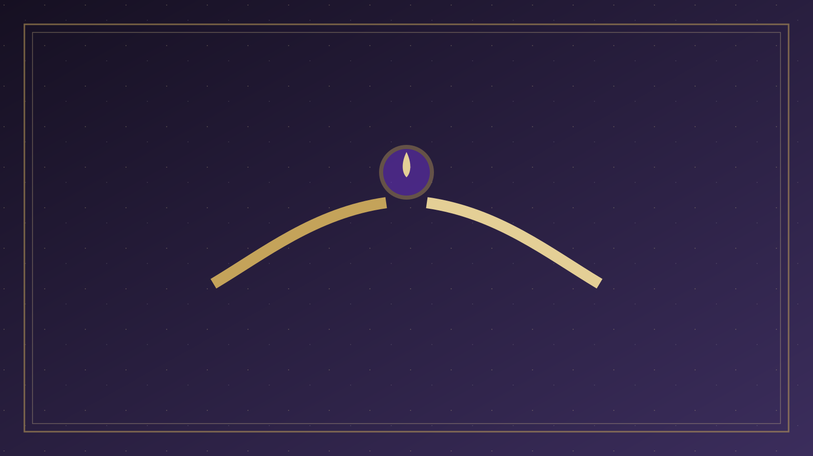
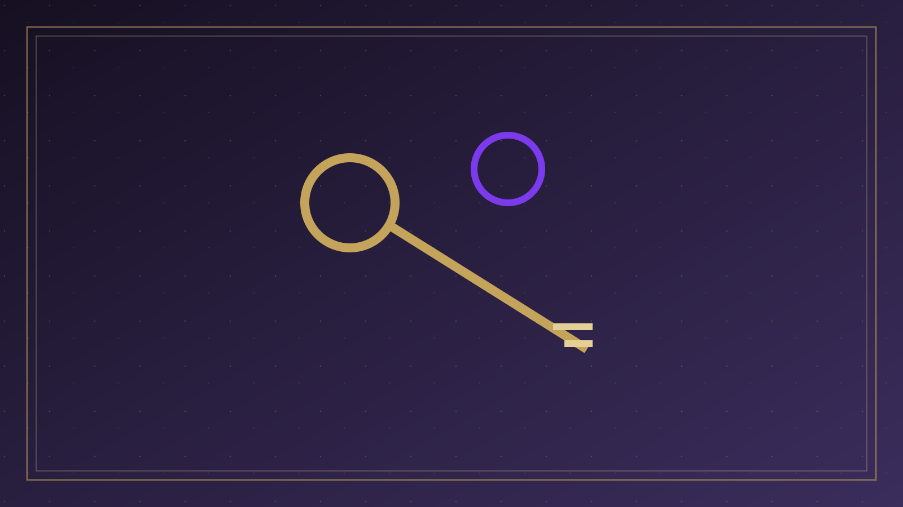
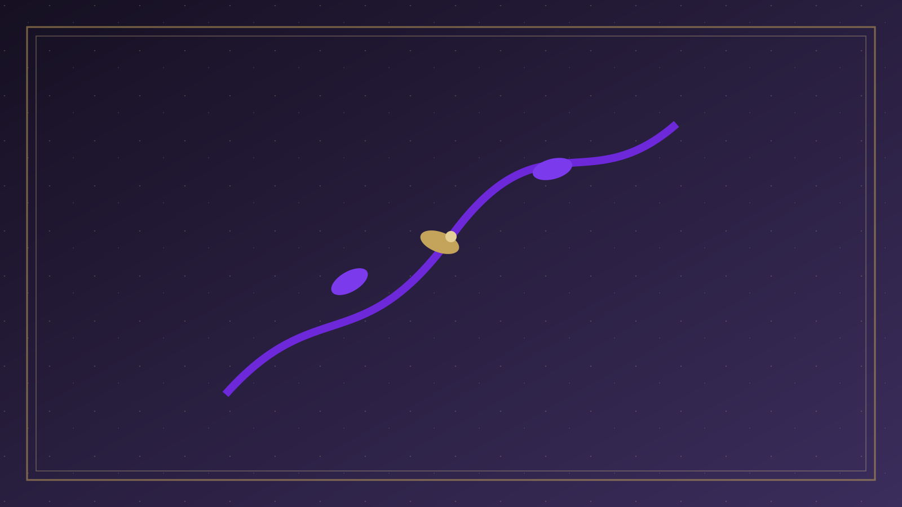
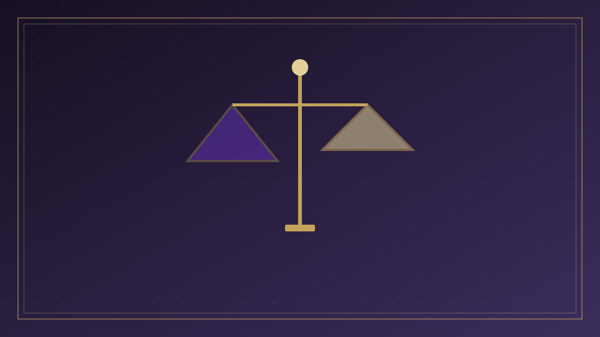
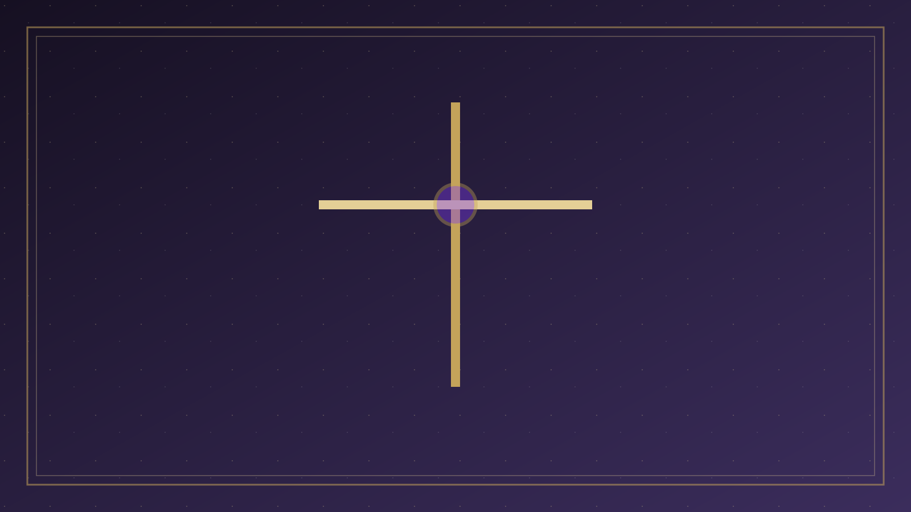

專論總覽
神的恩典與人的回應 | Divine Grace and Human Response
本篇已按原有標題拆成可獨立閱讀的分題。請選一題進入；正文未經改寫，只把長頁分開。

01
引言
引言 神人合作論是基督教救恩論中的一個重要觀點，它探討神在救恩中的工作與人的回應之間的關係。

02
核心問題
核心問題 神的恩典 救恩如何完全出於神的恩典？

03
神人合作的圖像
神人合作的圖像 ✨ 神的工作 呼召、光照、感動 賜下信心、重生 🙏 人的回應 聽見、相信、接受 悔改、順服 救恩是神主動的恩典工作與人真實回應的完美結合
04
聖經基礎
聖經基礎 關於神的主動工作 約翰福音 6:44 「若不是差我來的父吸引人，就沒有能到我這裡來的；到我這裡來的，在末日我要叫他復活。

05
立場比較
立場 立場 神的角色 人的角色 核心觀點 獨作論 (Monergism) 神完全主動，獨自完成救恩 人完全被動，只是接受 強調神的主權，人的信心也是神所賜 合作論 (Syner…

06
我們的立場
立場 相信 救恩完全是神的恩典 ，同時也承認 人需要真實地回應 。

07
實踐意義
實踐意義 積極傳福音 相信人的回應是真實的，激勵我們熱心傳揚福音，因為每個人的回應都重要。

08
思考與結語
互動思考 問題 1：根據立場，救恩的基礎是什麼？
- 互動思考
- 結語